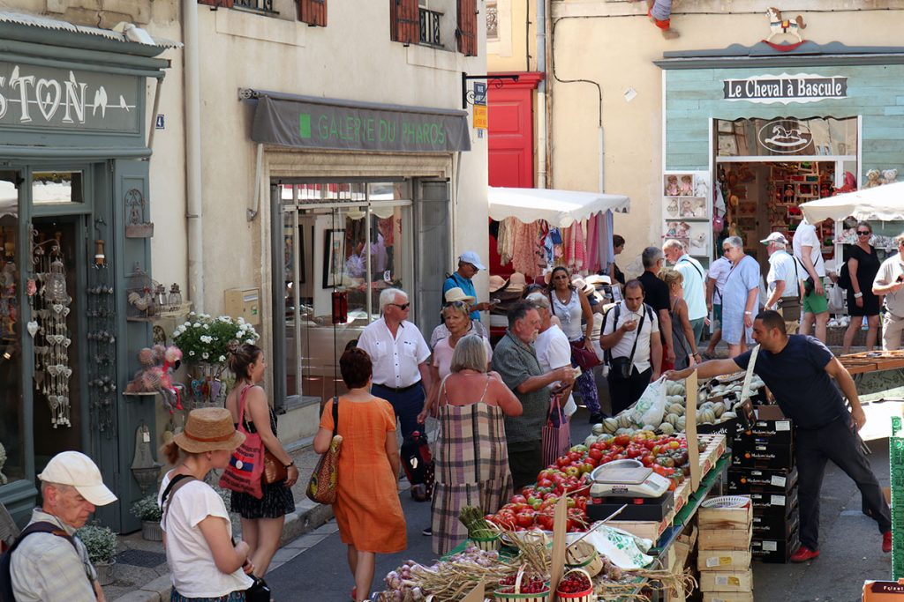

arrow_backLe marche du samedi est le petit frere authentique du grand marche du mercredi. Une quinzaine d'etals seulement — mais chaque exposant est le producteur lui-meme. Ici, la personne qui vous vend les fromages les fabrique, celle qui vend les legumes les a cueillis ce matin.
Pas de revendeurs, pas d'intermediaires : c'est le circuit court dans sa forme la plus pure. On y trouve des produits impossibles a trouver en grande surface — varietes anciennes, produits a tres petite echelle, recoltes du jour.
L'ambiance est apaisee, chaleureuse, familiale. On prend le temps de discuter avec les producteurs, d'apprendre l'origine de chaque produit. Un vrai moment de Provence authentique.